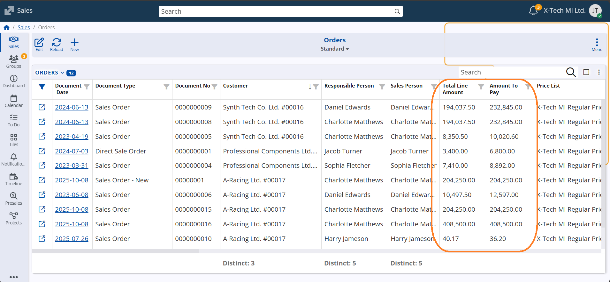
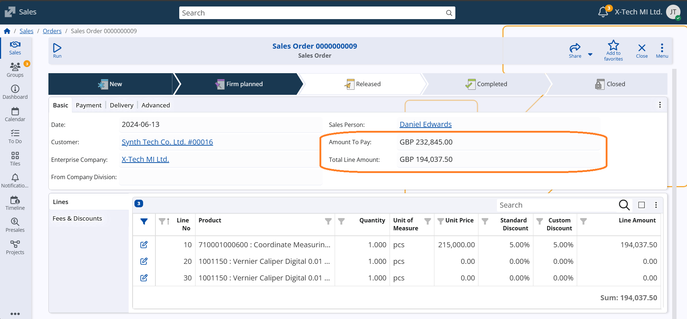
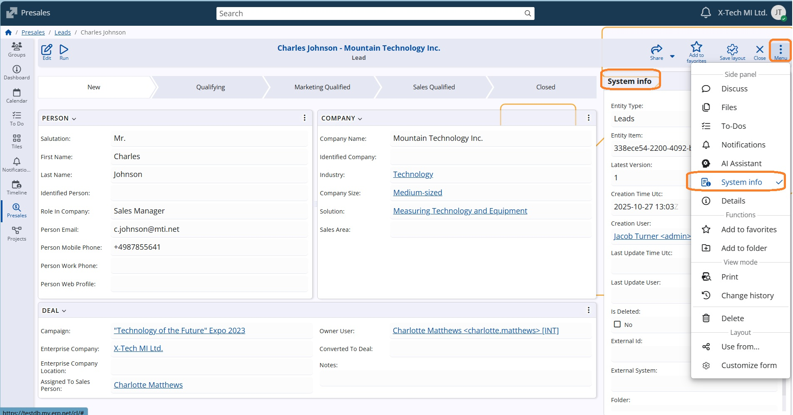
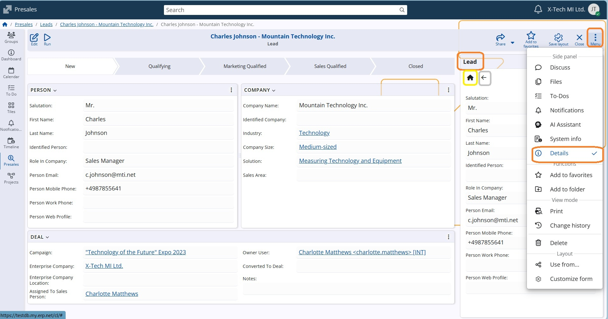
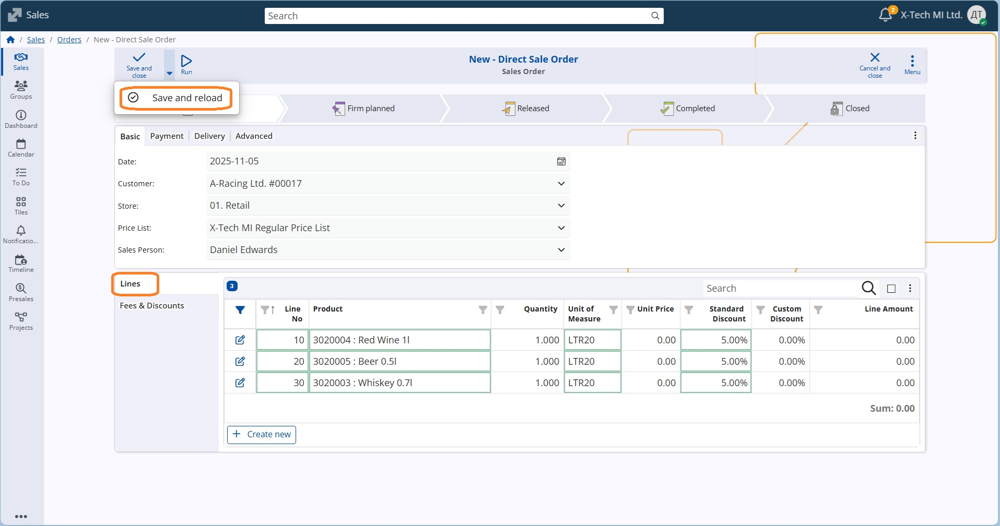

WEB Client
The ERP.net Web Client is the web-based user interface of the ERP.net business-management platform. It is one of the primary ways to access and interact with all the modules inside the ERP.net system—such as CRM, financials, inventory, production and more.
Notable features
Other features
1. New System-Calculated Attributes: “Total Line Amount” and “Amount To Pay”
Our latest update introduces two powerful system-calculated attributes — “Total Line Amount” and “Amount To Pay” — for all Invoice and Sales documents.
With these new fields, users can instantly view key financial figures directly within the document form or navigator, without needing to perform any manual calculations.
This improvement streamlines financial verification, enhances accuracy, and saves valuable time when managing transactions — helping you stay focused on what matters most: running your business efficiently.  
2. Access to object system information
System information provides special data for the currently observed object, as its ID for example. It is now easier to access that through the menu, as a side panel System info. 
3. Additional support by the Details panel
The Details panel, one of the most frequently used sources of information, has been improved to offer enhanced support when viewing a record.
Now displayed as a side panel, it shows all the details of the currently opened record — information that was previously only accessible while browsing through the navigator rows.
You can now customize the panel to display any fields you choose, not just the default ones. Additionally, if you navigate to another definition within the record, you can easily return to the main record details by clicking the Home icon. 
4. New time-saver in Line Panels - add multiple lines from Navigator
The next feature serves those who work with line panels like Order Lines, Offer Lines, and others!
Until now, when you needed to fill in a line field with option Right-click/Select by navigator (eg.insert a Product), the Navigator allowed you to select and insert just one item in the single line at a time. That meant repeating the process for each new line. With the latest update, you can now select multiple items in one go!
Simply use the Select by navigator option.

In the opened navigator swich-on option Select Multiple (optional) and mark all the products you need.

Once you confirm, each selected product will be automatically added as a separate line. 
Continue in the same way and save the new document.
Caution
If you edit an existing middle line, bear in mind that all selected items will REPLACE the next lines. The selection will not be inserted between the existing lines.
💡 Why it’s great:
- Saves you time and clicks when adding multiple products.
- Makes creating sales orders and offers much faster and smoother.
- Keeps your focus on your work — not on repetitive line editing.
Try it out next time you’re adding several products — you’ll feel the difference right away!